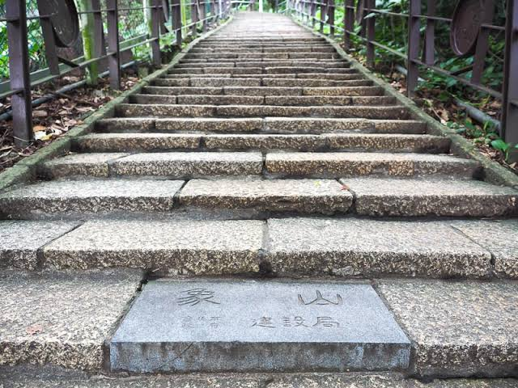

- Region
- North · Taipei City
- Difficulty
- Easy
- Time needed
- 1–2 h
- Best months
- Oct–Dec, Mar–Apr
What to do
Climb to the viewing platforms
About 20–30 minutes of stairs from the trailhead brings you to several platforms looking straight at Taipei 101.
Sit on the Six Giant Rocks
The big boulders (六巨石) near the top are the most famous photo spot. Expect a short queue at sunset.
Watch sunset into city lights
Arrive about 45 minutes before sunset, then stay as the city lights come on. Bring a small torch for the walk down.
Continue along the Four Beasts trails
If you have energy left, the trail links to Tiger, Leopard and Lion Mountains (四獸山) for a longer forest walk.
What to eat
Linjiang Street Night Market 臨江街觀光夜市
Two MRT stops away (Xinyi Anhe). Try grilled skewers, pepper buns and fresh fruit juice.
Xiaolongbao 小籠包
Soup dumplings are easy to find in the department stores around Taipei 101 after your hike.
Bubble tea 珍珠奶茶
You will want a cold drink after the stairs. Tea shops are everywhere near Xiangshan station.
Getting there
- From Taipei Main Station, take the MRT Red Line (Tamsui–Xinyi) to the last stop, Xiangshan (象山站). about 20 min
- Leave by Exit 2 and walk through the park and along Lane 342, Section 5, Songren Road to the trailhead. about 10 min
- Follow the stone stairs up to the viewing platforms and the Six Giant Rocks. 20–30 min
No bus or car needed. An EasyCard covers the whole trip.
Best season
Autumn and early winter usually have the clearest air and cooler temperatures for the stairs. Summer is very hot and humid, with afternoon thunderstorms and typhoons. New Year's Eve is famous for fireworks here, but the trail gets extremely crowded.
Photos

Tips
- Wear shoes with grip. The stairs are steep and slippery after rain.
- Bring water; there are no shops on the trail itself.
- Mosquitoes are common in warm months, so bring repellent.
- Weekends at sunset are busy. Weekday evenings are much calmer.
Last checked: 2026-11. Bus routes, train times and opening hours change, so please confirm on official websites before you go.